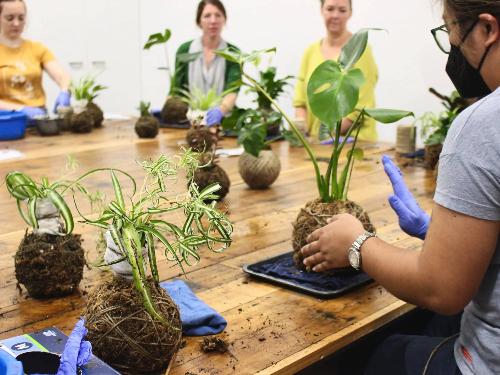

Kokedama avulsa
O primeiro capítulo — e, muitas vezes, o começo de uma pequena coleção.
Você escolhe o tamanho; nós indicamos a planta certa para a luz e o espaço que você tem. Sem adivinhação, só orientação.
Artesanal · Santo André · Grande ABC
Na Kokedama Nice & Lua, cada esfera de musgo nasce das nossas mãos — para transformar cantos esquecidos em refúgios cheios de vida.
São peças únicas, pensadas para o seu espaço e para a luz que ele recebe. Cada entrega inclui um guia de cuidados, para você acompanhar o crescimento da sua planta com tranquilidade.
Começar minha história verdeCada pedido é uma história — e adoramos quando ela volta em forma de mensagem.
«Encomendei para iluminar a sala e me encantei. Já são três kokedamas em casa. Tudo impecável — da planta à embalagem.»
«Presenteei minha mãe no aniversário. Ela disse que nunca tinha recebido algo tão bonito — e que continua vivo, ganhando espaço na janela.»
«Coloquei no escritório e virou assunto na equipe. Já indiquei a Nice & Lua para várias amigas.»
Um vislumbre do que sai do nosso ateliê em Santo André. A galeria cresce a cada encomenda — como uma coleção viva.
Em breve, novas fotos por aqui. Enquanto isso, fale conosco no WhatsApp e veja o que está em produção.
Mais do que uma planta em vaso.
A kokedama é uma arte japonesa: a raiz envolve-se em musgo vivo e forma uma esfera que respira beleza. Repousa sobre a mesa, suspende-se no ar ou encontra seu lugar na varanda — sem pedir um vaso à parte.
É escultura viva. É presença. E costuma roubar o olhar de quem entra no ambiente.
Cada pedido começa com uma conversa. A partir daí, moldamos a kokedama ideal para o seu momento.
O primeiro capítulo — e, muitas vezes, o começo de uma pequena coleção.
Você escolhe o tamanho; nós indicamos a planta certa para a luz e o espaço que você tem. Sem adivinhação, só orientação.
Para datas que pedem algo além do comum.
Embalagem especial, cartão manuscrito (se desejar) e guia de cuidados para quem recebe começar com segurança — sem precisar pesquisar nada depois.
Ambientes de trabalho também merecem respirar.
Produzimos em quantidade para consultórios, lojas e escritórios que buscam um verde com identidade — sem parecer decoração de catálogo.
Aprenda a técnica e leve para casa o que criou com as próprias mãos.
Em breve, encontros presenciais em Santo André. Envie uma mensagem para entrar na lista de espera.
Tudo é feito sob encomenda. Os valores abaixo são pontos de partida — a planta e o tamanho podem ajustar o valor final, e você sempre fica sabendo antes de confirmar.
A partir de R$ 45
Para quem quer experimentar ou tem um cantinho discreto esperando por vida.
A partir de R$ 75
A escolha mais pedida para presentear: marcante, delicada e impossível de esquecer.
A partir de R$ 120
Para quem busca presença: imponente pendurada ou apoiada em uma superfície de destaque.
💬 Pedidos especiais, kits ou quantidades maiores? Envie uma mensagem — montamos algo sob medida para você.

A Kokedama Nice & Lua nasceu em Santo André — e cresce com as mãos de quem faz cada peça aqui mesmo, no ABC.
Quando você encomenda conosco, não fala com um estoque anônimo. Fala com quem escolhe o musgo, acolhe a planta e embala cada entrega como se fosse a única do dia — porque, naquele momento, ela é.
Prefere retirar pessoalmente? Combine conosco por mensagem — teremos prazer em receber você.
Quatro passos. Sem pressa, sem burocracia — só o cuidado que a sua história verde merece.
Conte o que imagina: um presente, um canto da casa, o escritório. Pode ser só curiosidade — estamos aqui para orientar, sem compromisso.
Indicamos a planta certa para a luz e o espaço que você tem. Cada ambiente pede uma resposta diferente, e é isso que torna a peça sua.
Sua kokedama é feita sob encomenda, com tempo e atenção individual — do musgo à última folha.
Entregamos com embalagem pensada e um guia de cuidados, para você receber a planta e saber exatamente como acompanhar os próximos dias.
Não. O essencial é a rega — e ensinamos cada detalhe no guia que acompanha a peça. Em geral, mergulha-se a esfera em água por alguns minutos e deixa-se escorrer bem. É um ritual simples e até relaxante.
Sim. A maioria das espécies que trabalhamos se adapta bem a ambientes internos. Na conversa inicial, indicamos a planta certa para a quantidade de luz do seu espaço.
Muito. É presente que permanece na memória — bonito, vivo e com personalidade. Quem recebe costuma lembrar de quem deu por muito tempo.
Em geral, de 2 a 5 dias úteis após a confirmação. Em períodos de maior demanda, o prazo pode se estender um pouco — e você é avisado antes de fechar o pedido.
Entregamos em Santo André, São Bernardo do Campo, São Caetano do Sul, Diadema, Mauá e regiões próximas. Envie uma mensagem com o seu bairro e confirmamos na hora.
Sim. A embalagem é pensada para isso. Se algo chegar diferente do combinado, fale conosco — resolvemos juntos, com transparência.
Envie uma mensagem e conversamos sobre as opções disponíveis para o seu pedido.
Há um canto esperando por vida — e uma kokedama da Nice & Lua pode ser o próximo capítulo.
Falar no WhatsAppOu acompanhe as criações mais recentes no Instagram 🌿 @suacontaaqui